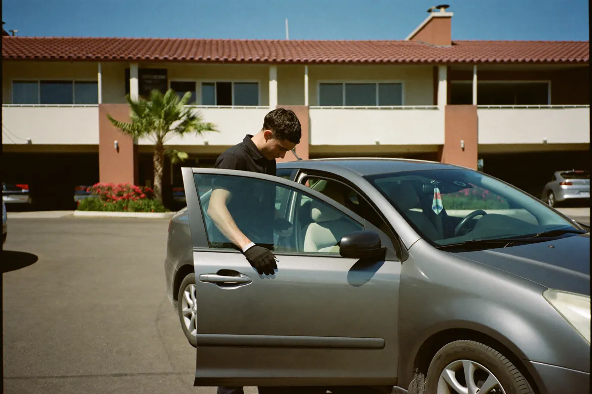
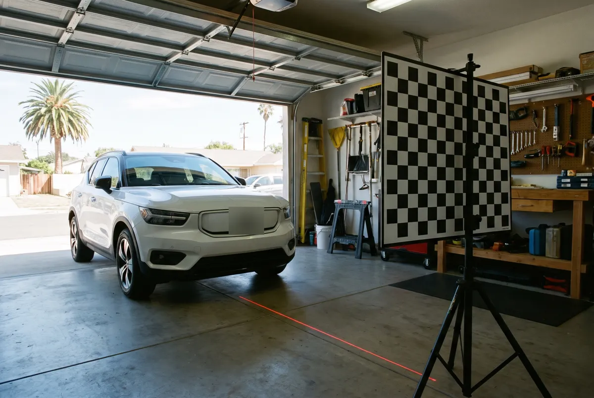

Garden Grove Auto Glass Repair handles five kinds of glass work, all done where your car is parked. Find yours below. Most callers start with “Is this a repair or a whole new windshield?” and that is a fine place to start.
Windshield replacement in Garden Grove is the fix for a crack longer than about six inches, a break at the edge of the glass, or damage in the driver’s view. It suits anyone whose windshield can no longer be safely repaired.
Left alone, a long crack keeps running with every hot afternoon, pothole and blast of the air conditioning. It also scatters the glare from the low sun, which makes the drive west on Garden Grove Boulevard at sunset harder than it needs to be.
Call us today for windshield replacement in Garden Grove. Read more about windshield replacement.

Windshield chip repair in Garden Grove fills a fresh rock chip with clear resin so it stops spreading and gets much harder to see. It works for chips smaller than a quarter that sit away from the edges.
Ignored, a chip collects dust and moisture, and the heat swings of a summer day pull at its edges. One hot afternoon with the air conditioning on high can turn it into a crack that needs a whole new windshield.
Call us today for windshield chip repair in Garden Grove. Read more about windshield chip repair.

Car window replacement in Garden Grove covers door glass and the small quarter windows broken by a break-in, an accident or a failed window regulator. Side glass is tempered, so it shatters into small pieces that have to be vacuumed out of the door and the cabin.
Until it is replaced, a broken window leaves the car easy to get into and lets in dust and the damp marine air. Plastic and tape rarely hold up at freeway speed.
Call us today for car window replacement in Garden Grove. Read more about car window replacement.

Rear windshield replacement in Garden Grove puts new back glass on sedans, hatchbacks, SUVs and pickups. Most rear glass carries defroster lines, and many cars run the radio antenna or a rear wiper through it, so those get reconnected during the job.
With the back glass gone, the cabin is open to theft and weather, and broken pieces keep falling into the trunk or cargo area. You also lose the view through the rearview mirror.
Call us today for rear windshield replacement in Garden Grove. Read more about rear windshield replacement.

ADAS camera calibration in Garden Grove re-aims the forward camera behind the rearview mirror after a windshield is replaced. Most newer vehicles with lane-keep assist, automatic emergency braking or adaptive cruise control need it.
Skipped, the camera can read the lane a few degrees off. Warning lights may come on, or the safety systems may brake or steer at the wrong moment.
Call us today for ADAS camera calibration in Garden Grove. Read more about ADAS camera calibration.

Call and describe the damage. We will tell you whether it is a repair or a replacement and give you a free quote.
Call (714) 200-1764 Now